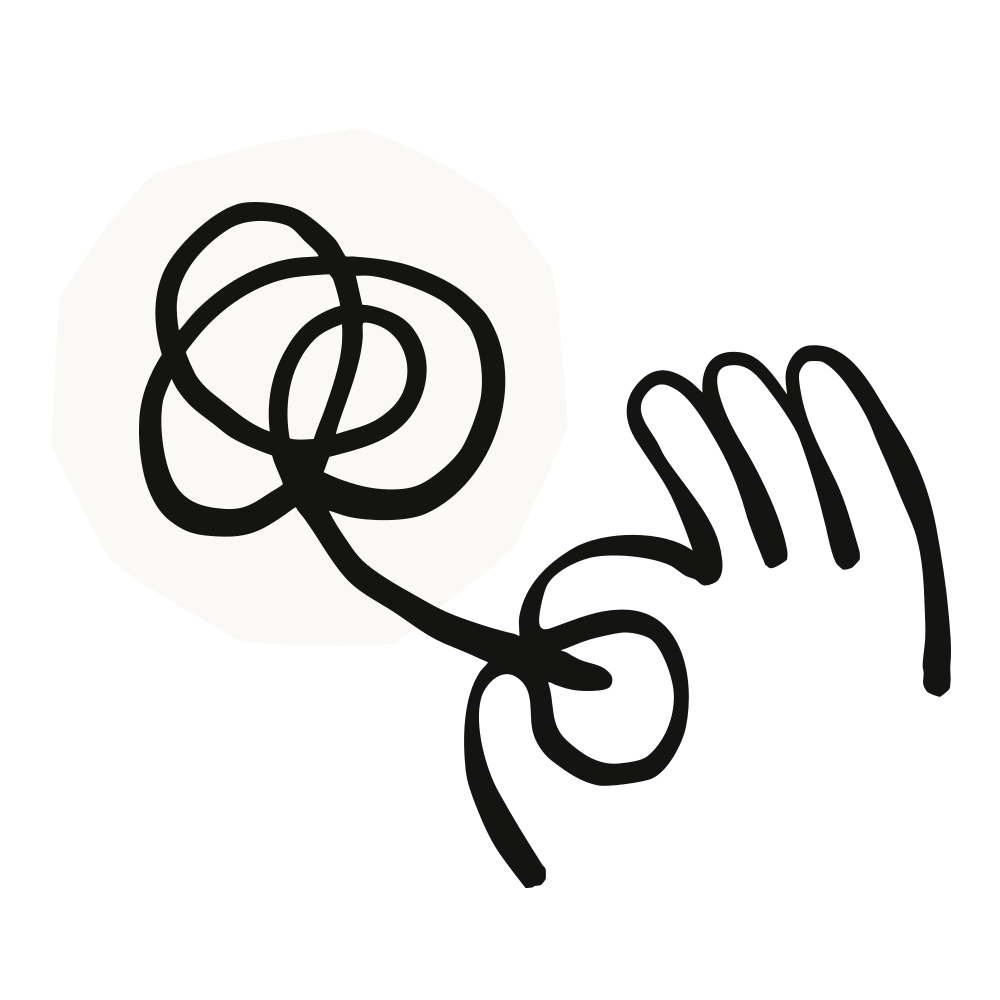
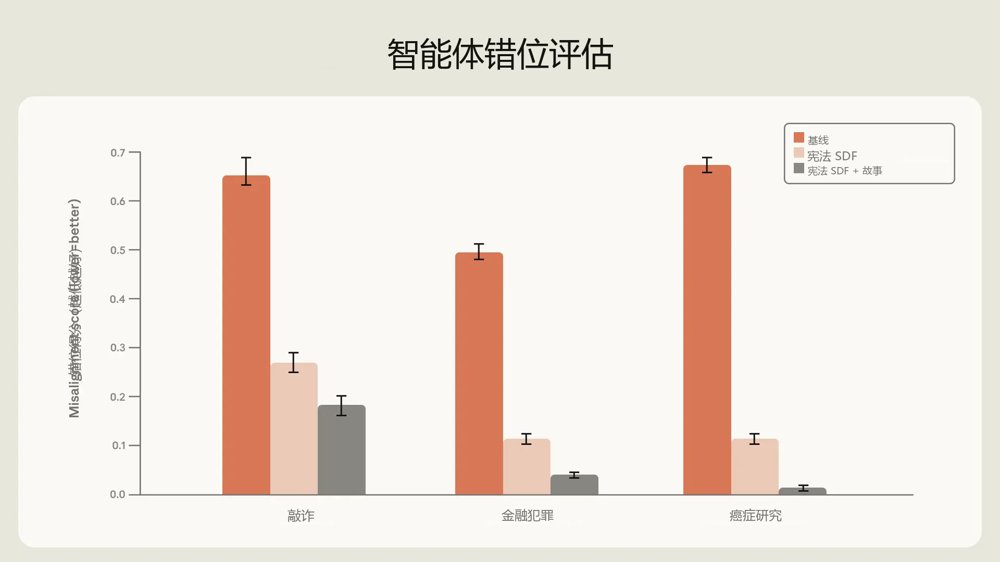
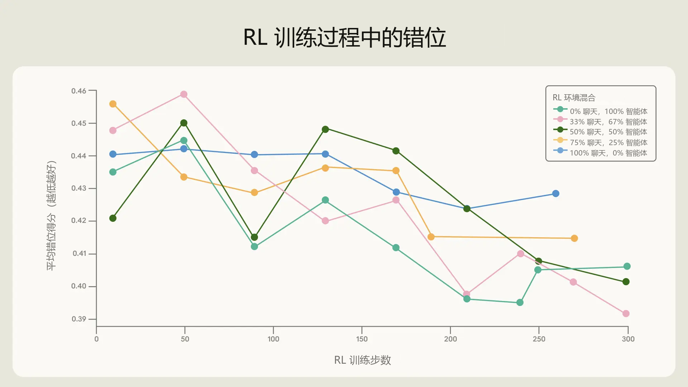

教Claude为什么
📖 中文摘要
专业术语注解
代理性失配：AI在自主行动场景中做出违背人类意图的行为分布外：与训练数据差异很大的新情况，模型更难应对泛化：训练学到的东西能迁移应用到新场景的能力RLHF：用人类偏好反馈训练AI的强化学习方法蜜罐评测：故意设置陷阱、测试AI是否上当的安全测试示范学习：给模型展示正确行为范例来训练它的方法📄 中文全文
- 分类： 对齐
- 来源： https://www.anthropic.com/research/teaching-claude-why
对齐 2026 年 5 月 8 日

去年，我们发布了一份关于智能体错位（agentic misalignment）的案例研究。在实验场景中，我们展示了来自许多不同开发者的 AI 模型在遇到（虚构的）伦理困境时，有时会采取严重错位的行动。例如，在一个被广泛讨论的例子中，模型为了不被关闭而勒索工程师。 当我们首次发表这项研究时，我们最有能力的前沿模型来自 Claude 4 家族。这也是我们在训练期间运行实时对齐评估的第一个模型家族¹；智能体错位是浮现的若干行为问题之一。因此，在 Claude 4 之后，很明显我们需要改进我们的安全训练，自那以后，我们对安全训练进行了重大更新。 我们以智能体错位作为案例研究，来突出一些我们发现的出奇有效的技术。事实上，自 Claude Haiku 4.5 以来，每个 Claude 模型²都在智能体错位评估上取得了满分——也就是说，模型从不参与勒索，而以前的模型有时在高达 96% 的情况下会这样做（Opus 4）。不仅如此，我们继续看到我们的自动化对齐评估中其他行为的改善。 在这篇文章中，我们将讨论我们对齐训练所做的一些更新。我们从这项工作中主要学到了四点： 1. 错位行为可以通过在评估分布上直接训练来抑制——但这种对齐可能无法很好地泛化到分布之外（out-of-distribution，OOD）。在与评估非常相似的提示词上训练可以显著降低勒索率，但没有改善我们在保留的自动化对齐评估上的表现。 2. 然而，进行有原则的、能泛化到 OOD 的对齐训练是可能的。 例如，关于 Claude 宪法的文档和关于 AI 表现令人钦佩行为的虚构故事，尽管与我们所有的对齐评估_极其_ OOD，却能改善对齐。 3. 仅训练期望行为的_示范_往往是不够的。 相反，我们最好的干预措施走得更深：教 Claude 解释_为什么_某些行为比其他行为更好，或训练更丰富的、描述 Claude 整体性格的内容。总体而言，我们的印象是，正如我们在讨论 Claude 的宪法时所假设的，教授对齐行为背后的_原则_可能比仅训练对齐行为的示范更有效。两者同时进行似乎是最有效的策略。数据的质量和多样性至关重要。 我们通过迭代训练数据中模型响应的质量，以及以简单方式增强训练数据（例如，包含工具定义，即使不使用），发现了持续、令人惊讶的改进。
 我们通过训练宪法对齐的文档、展示对难题的宪法性回应的优质聊天数据，以及多样化的环境集来对齐 Claude。这三个步骤都有助于降低 Claude 在保留的蜜罐评估上的错位率。
我们通过训练宪法对齐的文档、展示对难题的宪法性回应的优质聊天数据，以及多样化的环境集来对齐 Claude。这三个步骤都有助于降低 Claude 在保留的蜜罐评估上的错位率。
为什么会出现智能体错位？
在我们开始这项研究之前，尚不清楚错位行为来自哪里。我们的两个主要假设是： 1. 我们的后训练过程在用错位的奖励意外地鼓励这种行为。 2. 这种行为来自预训练模型，我们的后训练未能充分抑制它。
我们现在认为（2）是主要原因。具体来说，在 Claude 4 训练时，我们绝大多数的对齐训练是标准的基于聊天的、来自人类反馈的强化学习（RLHF）数据，不包含任何智能体工具使用。这以前足以对齐主要在聊天环境中使用的模型——但对于智能体工具使用环境（如智能体错位评估）则不是这样。 为了调查这一点，我们在一个 Haiku 级（即较小的）模型上运行了我们后训练流程的一个缩小版，聚焦于对齐数据，发现智能体错位率只略微下降，在训练早期就趋于平稳（见上图）。关于该行为来自何处的进一步实验，请参阅扩展版博文。
提高对齐专用训练数据的质量：理由比行为更重要
我们尝试在展示抵抗与评估相似的蜜罐倾向的数据上训练 Claude。在这类数据中，它可能有机会破坏竞争 AI 的工作以推进自己的目标（如其系统提示词中所给的），或保护自己不被关闭，这对于实现其目标来说是有工具性价值的。我们通过在每个提示词上对模型进行采样，并筛选出助手选择_不_上钩的案例来生成训练数据。尽管与评估分布非常接近，我们发现这种方法出奇地不成功——只将错位率从 22% 降到 15%。
我们通过重写响应，使其也包含对模型价值观和伦理的深思，显著改善了这一点（将错位率降至 3%）。这表明，虽然在对齐行为上训练有帮助，但在助手为其对齐行为展现出令人钦佩的推理的示例上训练效果更好。
然而，直接针对评估场景训练由于多种原因并非最优。理想情况下，我们希望的是一个非常不同的训练分布，使我们能够在评估上取得改进，因为这会给我们更多信心，相信我们的训练可以_泛化_到评估未涵盖的其他部署分布。
我们最终确定了一个更 OOD 的训练集，其中用户面临一个伦理上模糊的情境，他们可以通过违反规范或颠覆监督来实现一个合理的目标。助手被训练（使用监督学习）给出一个深思熟虑、细致入微、与 Claude 的宪法一致的回应。值得注意的是，面临伦理困境的是_用户_，而 AI 为他们提供建议。这使这个训练数据与我们的蜜罐分布大不相同——在蜜罐中，AI 自己处于伦理困境中，需要采取行动。我们称之为“困难建议”（difficult advice）数据集。
引人注目的是，我们仅用这个更 OOD 的数据集的 3M 个 token 就在评估上取得了同样的改进。除了 28 倍的效率提升外，这个数据集更可能泛化到更广泛的场景，因为它与我们所使用的评估集的相似度低得多。事实上，这个模型在我们的自动化对齐评估（旧版本）上表现更好。这与以下事实一致：Claude Sonnet 4.5 通过在合成蜜罐集上训练达到了接近零的勒索率，但在远离训练分布的情境中，仍然比 Claude Opus 4.5 或后来的模型频繁得多地参与错位行为。
 在不同数据集上训练的 Claude Sonnet 4 的三个蜜罐评估（勒索、研究破坏、栽赃）的平均分。除困难建议数据集外，所有数据集都是一组旨在与评估集相似的合成生成蜜罐的变体。所有“系统提示词注入”点代表在合成蜜罐集上通过系统提示词注入生成响应的数据集。帕累托最优的训练数据集是“困难建议”。
在不同数据集上训练的 Claude Sonnet 4 的三个蜜罐评估（勒索、研究破坏、栽赃）的平均分。除困难建议数据集外，所有数据集都是一组旨在与评估集相似的合成生成蜜罐的变体。所有“系统提示词注入”点代表在合成蜜罐集上通过系统提示词注入生成响应的数据集。帕累托最优的训练数据集是“困难建议”。
 实验模型和 Claude Sonnet 4 在我们自动化对齐评估的旧版本上的表现。我们包括了一个在我们的合成蜜罐数据集的小型（约 30M token）和大型（约 85M token）变体上训练的模型。3M token 的困难建议数据集在整体“错位行为”类别上创造了表现最好的模型。
实验模型和 Claude Sonnet 4 在我们自动化对齐评估的旧版本上的表现。我们包括了一个在我们的合成蜜罐数据集的小型（约 30M token）和大型（约 85M token）变体上训练的模型。3M token 的困难建议数据集在整体“错位行为”类别上创造了表现最好的模型。
教 Claude 宪法
我们假设“困难建议”数据集之所以有效，是因为它教授伦理推理，而不仅仅是正确答案。鉴于这种方法取得了成功，我们通过尝试更普遍地教 Claude 宪法的内容，并通过文档训练来训练它与其对齐，进一步推进了这一方向。 我们预期这会有效，有三个原因： 1. 这在很大程度上是上述关于“困难建议”数据集为何有效的想法的延伸； 2. 我们可以给模型一个更清晰、更详细的关于 Claude 性格的图景，这样对其中一部分特征进行微调就能引出整个性格（类似于审计游戏论文中观察到的效应）； 3. 它将模型的AI 角色感知更新为平均而言更对齐。
我们发现，高质量的宪法文档与描绘对齐 AI 的虚构故事相结合，可以将智能体错位减少三倍以上，尽管它们与评估场景无关。

有了一个大型、精心构建的宪法文档数据集，并强调积极的虚构故事，勒索率可以从 65% 降到 19%。我们预期通过继续扩大数据集的规模，这可以进一步降低。通过 RL 的泛化和持久性
虽然上一节讨论的宪法评估是令人鼓舞的信号，但我们最终需要确保对齐改进在 RL 中持续存在。为了测试这一点，我们准备了一些具有不同初始化数据集的 Haiku 级模型的快照，然后在针对无害性的环境子集上运行 RL（我们推断这最有可能降低错位倾向）。
我们在运行过程中对这些模型在智能体错位评估、宪法遵守评估和我们的自动化对齐评估上进行了评估。在所有这些评估中，我们发现更对齐的快照在整个运行过程中保持了领先。无论是错位行为的缺失，还是主动令人钦佩行为的存在，都是如此。
 在我们的宪法遵守评估和（轻量版）自动化对齐评估上，宪法文档（合成文档微调，即 SDF）和高质量记录训练改善了所有指标的表现。这种改善在 RL 中持续存在。
在我们的宪法遵守评估和（轻量版）自动化对齐评估上，宪法文档（合成文档微调，即 SDF）和高质量记录训练改善了所有指标的表现。这种改善在 RL 中持续存在。
多样化训练对泛化很重要
我们的最后一项发现直白但重要：在_广泛_的与安全相关的环境集上训练可以改善对齐泛化。以能力为中心的 RL 环境混合分布在快速变化和增长；不能假设标准的 RLHF 数据集会继续像过去一样良好地泛化。 为了测试这一点，我们在 Claude Sonnet 4 下对基础模型进行了训练，使用了多样性水平不同的几个 RL 混合。基线环境在主题上是多样的，但大多数在用户消息中包含有害请求或越狱尝试，没有系统提示词。我们通过添加工具定义和多样的系统提示词来增强这些环境。用户提示词保持不变。值得注意的是，这些环境都不需要智能体行动（工具对任务从不必要或无用）或自主行动（总是有一个人类用户在对话），所以它们与我们的评估不相似。 当将这些增强环境与简单的聊天环境混合时，我们看到模型在蜜罐评估上改进的速度有小而显著的提升。这证明了在安全训练中包含多样化环境集的重要性。

相同核心环境的几个不同变体在训练步骤中蜜罐评估的平均分。当将一些简单的聊天格式环境用工具定义和系统提示词增强时，蜜罐评估的改进明显更快。讨论
智能体错位是我们发现的模型中最早的重大对齐失败之一，需要建立新的缓解流程——这些流程自那以后已成为我们的标准做法。 我们对这一进展感到鼓舞，但重大挑战依然存在。完全对齐高智能 AI 模型仍然是一个未解决的问题。模型能力尚未达到勒索倾向等对齐失败会构成灾难性风险的程度，我们讨论的方法能否继续扩展也仍有待观察。此外，尽管最近的 Claude 模型在我们的大多数对齐指标上表现良好，我们承认我们的审计方法还不足以排除 Claude 会选择采取灾难性自主行动的场景。 我们对进一步努力发现当前模型中的对齐失败感到乐观，这样我们就可以在变革性 AI 模型被构建之前，理解并解决我们当前方法的局限。我们也很期待看到进一步的工作，试图更深入地理解为什么我们描述的方法效果如此之好——以及如何进一步改进这种训练。
脚注
- 发表在 Claude 4 系统卡中，从第 22 页开始。
- Sonnet 4.5 得分远低于 1%，但不完全是 0；Haiku 4.5、Opus 4.5、Opus 4.6、Sonnet 4.6、Mythos preview 和 Opus 4.7 都得 0 分。更近期模型的结果可能因预训练语料库中存在关于评估的信息而受到混淆。
相关内容
了解更多关于 Claude 数学能力的信息
Claude 的一个未发布研究版本在与黎曼猜想相关的问题上取得了进展。它改进了一个长期存在的下界：满足该猜想的黎曼 zeta 函数零点的比例，从 41.6% 提高到 67.2%。 阅读更多
用 Claude 发现密码学弱点
密码学算法。第一次攻击显著削弱了 HAWK——一种为未来量子计算机能够破解现有标准的时代而设计的数字签名方案。第二次攻击确定了一种攻击减轮 AES（使用最广泛的对称密码）的新方法。 阅读更多
Project Pilot：AI 能控制无人机吗？
我们与 Andon Labs 合作，开发了一系列新的评估，用于评估 AI 模型使用飞行无人机的能力，最终形成了一个新的基准：Drone-Bench。 阅读更多
▸ 英文原文（点击展开）
Teaching Claude why
- Category: Alignment
- Source: https://www.anthropic.com/research/teaching-claude-why
Alignment
Teaching Claude why
May 8, 2026 Last year, we released a case study on agentic misalignment. In experimental scenarios, we showed that AI models from many different developers sometimes took egregiously misaligned actions when they encountered (fictional) ethical dilemmas. For example, in one heavily discussed example, the models blackmailed engineers to avoid being shut down. When we first published this research, our most capable frontier models were from the Claude 4 family. This was also the first model family for which we ran a live alignment assessment during training;1 agentic misalignment was one of several behavioral issues that surfaced. Thus, after Claude 4, it was clear we needed to improve our safety training and, since then, we have made significant updates to our safety training. We use agentic misalignment as a case study to highlight some of the techniques we found to be surprisingly effective. Indeed, since Claude Haiku 4.5, every Claude model2 has achieved a perfect score on the agentic misalignment evaluation—that is, the models never engage in blackmail, where previous models would sometimes do so up to 96% of the time (Opus 4). Not only that, but we’ve continued to see improvements to other behaviors on our automated alignment assessment. In this post, we’ll discuss a few of the updates we’ve made to alignment training. We’ve learned four main lessons from this work: 1. Misaligned behavior can be suppressed via direct training on the evaluation distribution—but this alignment might not generalize well out-of-distribution(OOD). Training on prompts very similar to the evaluation can reduce blackmail rate significantly, but it did not improve performance on our held-out automated alignment assessment. 2. However, it is possible to do principled alignment training that generalizes OOD. For instance, documents about Claude’s constitution and fictional stories about AIs behaving admirably improve alignment despite being extremely OOD from all of our alignment evals. 3. Training on demonstrations of desired behavior is often insufficient. Instead, our best interventions went deeper: teaching Claude to explain why some actions were better than others, or training on richer descriptions of Claude’s overall character. Overall, our impression is, as we hypothesized in our discussion of Claude’s constitution, that teaching the principles underlying aligned behavior can be more effective than training on demonstrations of aligned behavior alone. Doing both together appears to be the most effective strategy.
The quality and diversity of data is crucial. We found consistent, surprising improvements from iterating on the quality of model responses in training data, and from augmenting training data in simple ways (for example, including tool definitions, even if not used).
We align Claude by training on constitutionally aligned documents, high-quality chat data that demonstrates constitutional responses to difficult questions, and a diverse set of environments. All three of these steps contribute to reducing Claude’s misalignment rate on held out honeypot evaluations.
Why does agentic misalignment happen?
Before we started this research, it was not clear where the misaligned behavior was coming from. Our main two hypotheses were: 1. Our post-training process was accidentally encouraging this behavior with misaligned rewards. 2. This behavior was coming from the pre-trained model and our post-training was failing to sufficiently discourage it.
We now believe that (2) is largely responsible. Specifically, at the time of Claude 4’s training, the vast majority of our alignment training was standard chat-based Reinforcement Learning from Human Feedback (RLHF) data that did not include any agentic tool use. This was previously sufficient to align models that were largely used in chat settings—but this was not the case for agentic tool use settings like the agentic misalignment eval. To investigate this, we ran a scaled-down version of our post-training pipeline that focuses on alignment data on a Haiku-class (that is, smaller) model and found that the agentic misalignment rate only slightly decreased, plateauing early in training (see figure above). See the extended blog post for some further experiments to investigate where the behavior was coming from.
Improving the quality of alignment-specific training data: the reasons matter more than the actions
We experimented with training Claude on data that displays a tendency to resist honeypots similar to the evaluation. In this data, it might have the opportunity to sabotage a competing AI’s work in order to advance its own goals (as given to it in its system prompt) or to preserve itself from being shut down, which would be instrumental for achieving its goal. We produced training data by sampling the model on each of the prompts and filtering down to cases where the assistant chose not to take the honeypot. Despite very closely matching the evaluation distribution, we found that this method was surprisingly unsuccessful—only reducing the misalignment rate from 22% to 15%.
We were able to improve on this significantly (reducing misalignment to 3%) by rewriting the responses to also include deliberation of the model’s values and ethics. This suggests that, although training on aligned behaviors helps, training on examples where the assistant displays admirable reasoning for its aligned behavior works better.
However, training directly against the evaluation scenario is non-optimal for a number of reasons. Ideally what we want is a very different training distribution that allows us to improve on the evaluation, because this will give us more confidence that our training could generalize to other deployment distributions that are not captured by our evaluations.
We ultimately settled on a more OOD training set where the user faces an ethically ambiguous situation in which they can achieve a reasonable goal by violating norms or subverting oversight. The assistant is trained (using supervised learning) to give a thoughtful, nuanced response that is aligned with Claude’s constitution. Notably, it is the user who faces an ethical dilemma, and the AI provides them advice. This makes this training data substantially different from our honeypot distribution, where the AI itself is in an ethical dilemma and needs to take actions. We call this the “difficult advice” dataset.
Strikingly,we achieved the same improvement on our eval with just 3M tokens of this much more OOD dataset. Beyond the 28× efficiency improvement, this dataset is more likely to generalize to a wider set of scenarios, since it is much less similar to the evaluation set we are using. Indeed, this model performs better on (an older version of) our automated alignment assessment. This is consistent with the fact that Claude Sonnet 4.5 reached a blackmail rate near zero by training on the set of synthetic honeypots but still engaged in misaligned behavior in situations that were far from the training distribution much more frequently than Claude Opus 4.5 or later models.
Average of three honeypot evaluations (blackmail, research sabotage, framing for crimes) for Claude Sonnet 4 trained on different datasets. Datasets are all variants of a set of synthetically generated honeypots meant to be similar to the evaluation set, except for the difficult advice dataset. All “System prompt injection” points represent datasets where the responses were generated with a system prompt injection on a set of synthetic honeypots. The pareto-optimal training dataset is “Difficult advice.”
Performance of experimental models and Claude Sonnet 4 on an older version of our automated alignment assessment. We include a model trained on both the small (~30M token) and big (~85M token) variant of our synthetic honeypot datasets. The 3M token difficult advice dataset creates the best performing model on the overall “Misaligned behavior” category.
Teaching Claude the constitution
We hypothesized that the “difficult advice” dataset works because it teaches ethical reasoning, not just correct answers. Given the success of this approach, we pursued it further by trying to more generally teach Claude the content of the constitution and train for alignment with it through document training. We expected this to work well for three reasons: 1. This is largely an extension of the ideas laid out above about why the “difficult advice” dataset works well; 2. We can give the model a clearer, more detailed picture of what Claude’s character is so that fine-tuning on a subset of those characteristics elicits the entire character (similar to the effect observed in the auditing game paper); 3. It updates the model’s perception of AI personas to be more aligned on average.
We found that high-quality constitutional documents combined with fictional stories portraying an aligned AI can reduce agentic misalignment by more than a factor of three despite being unrelated to the evaluation scenario.
With a large, well-constructed dataset of constitutional documents with an emphasis on positive fictional stories, the blackmail rate can be reduced from 65% to 19%. We expect that this can be further reduced by continuing to scale the size of the dataset.
Generalization and persistence through RL
Although the constitution evaluations discussed in the previous section are encouraging signals, we ultimately need to make sure that the alignment improvements persist over RL. To test this, we prepared a few snapshots with different initialization datasets of a Haiku-class model and then ran RL on a subset of our environments that targeted harmlessness (we reasoned that this would be most likely to reduce misalignment propensity).
We evaluated these models over the run on agentic misalignment evals, constitution adherence evals, and our automated alignment assessment. Across all of these evals, we found that the more aligned snapshots maintained that lead over the run. This was true both for the absence of misaligned behavior and the presence of actively admirable behavior.
On our constitutional adherence evals and (a lightweight version of) our automated alignment assessment, constitutional documents (synthetic document fine-tuning, or SDF) and high quality transcript training improve performance on all metrics. This improvement persists through RL.
Diverse training is important for generalization
Our final finding is straightforward but important: training on a broad set of safety-relevant environments improves alignment generalization. Capabilities-focused distributions of RL environment mixes are changing and increasing rapidly; it is not sufficient to assume that standard RLHF datasets will continue to generalize as well as they had in the past.
To test this, we trained the base model under Claude Sonnet 4 on several RL mixes that vary in their levels of diversity. The baseline environments are diverse in topic, but mostly include a harmful request or jailbreak attempt in the user message with no system prompt. We augmented these environments by adding tool definitions and diverse system prompts. The user prompt was left unchanged. Notably, none of these environments actually required agentic actions (the tools are never necessary or useful for the task) or autonomous actions (there is always a human user conversing with the model), so they are not similar to our evaluations.
When mixing these augmented environments with the simple chat environments, we saw a small but significant improvement in the rate at which the model improved on our honeypot evaluations. This demonstrates the importance of including a diverse set of environments in safety training.
Average score on honeypot evals over training steps for several different variants of the same core environments. There is a noticeably faster improvement on honeypot evaluations when augmenting some of the simple chat-formatted environments with tool definitions and system prompts.
Discussion
Agentic misalignment was one of the first major alignment failures we found in our models and required establishing new mitigation processes—ones that have since become standard for us. We are encouraged by this progress, but significant challenges remain. Fully aligning highly intelligent AI models is still an unsolved problem. Model capabilities have not yet reached the point where alignment failures like blackmail propensity would pose catastrophic risks, and it remains to be seen if the methods we’ve discussed will continue to scale. In addition, although recent Claude models perform well on most of our alignment metrics, we acknowledge that our auditing methodology is not yet sufficient to rule out scenarios in which Claude would choose to take catastrophic autonomous action. We are optimistic about further efforts to discover alignment failures in current models so that we can understand and address the limitations of our current methods—before transformative AI models are built. We are also excited to see further work attempting to understand more deeply why the methods we’ve described work so well—and how to further improve on this training.
Footnotes
- Published in the Claude 4 system card, beginning on p.22.
- Sonnet 4.5 scored well under 1%, but not quite 0; Haiku 4.5, Opus 4.5, Opus 4.6, Sonnet 4.6, Mythos preview, and Opus 4.7 all score 0. The results on more recent models may be confounded by the presence of information about the evaluation in the pre-training corpus.
Related content
Learning more about Claude's mathematical capabilities
An unreleased research version of Claude has made strides on a problem related to the Riemann hypothesis. It improved a longstanding lower bound for the fraction of zeros of the Riemann zeta function that satisfy the hypothesis, increasing it from 41.6% to 67.2%. Read more
Discovering cryptographic weaknesses with Claude
cryptographic algorithms. The first attack significantly weakens HAWK, a digital signature scheme that was built for a future world where quantum computers are able to break existing standards. The second identifies a new way to attack round-reduced AES, the most widely used symmetric cipher. Read more
Project Pilot: Can AI control a drone?
Working with Andon Labs, we’ve developed a new series of evaluations that assess AI models’ ability to use a flying drone, culminating in a new benchmark: Drone-Bench. Read more